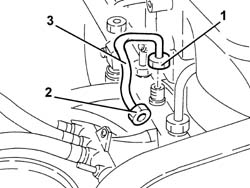
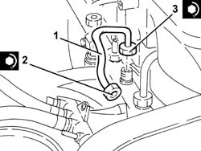
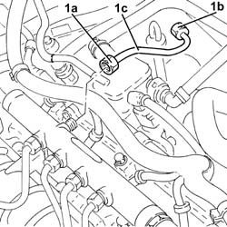
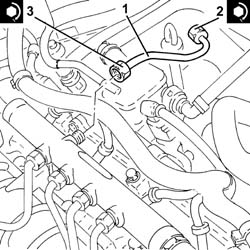
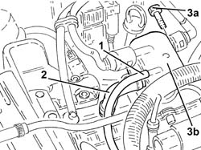
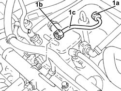
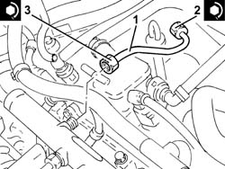

1060F20 pressure pump/manifold pipe - r r
- Path
- Procedures > 10 ENGINE > 1060 DIESEL FUEL INJECTION > 1060F injectors and lines > 1060F20 pressure pump/manifold pipe - r r
- Kind
- repair procedure (removal / refitting; the operation number is the code)
- Applies to
- engines: 1.9 JTD 8v , 1.9 JTD 16v, 2.4 JTD 10v, 2.4 JTD 20v; all production periods
- Interactive page
- https://sloeber94.github.io/elrnDB-a156/en/#/3237801
Applies to: engines: 1.9 JTD 8v , 2.4 JTD 10v; all production periods
 Removing
Removing
 Refitting
RefittingUndo the bolts and move the fuel return manifold pipe away from the air chamber.
1. Undo the manifold side connector for the pipe from the pressure pump to the fuel manifold using a suitable spanner.
2. Disconnect the pressure pump side connector from the pipe leading from the pressure pump using a suitable spanner.
3. Remove the pipe carrying fuel from the pressure pump to the single fuel manifold pipe.

Applies to: engines: 1.9 JTD 8v , 2.4 JTD 10v; all production periods
Refitting
Removing1. Place the pipe from the pressure pump to the single fuel manifold back in its housing and fix it using the connectors without tightening them.
2. Tighten the connector for the pipe from the pressure pump to the single fuel manifold, pump side, to the recommended torque using a suitable spanner.
 | Fastening | Component | Ø | Value (daNm) |
|---|---|---|---|---|
2 | Connector | PRESSURE PUMP LINE TO FUEL MANIFOLD | M12 | (Pressure pump side) 2.2 |
3. Tighten the connector for the pipe from the pressure pump to the single fuel manifold, fuel manifold side, to the recommended torque using a suitable spanner.
| Fastening | Component | Ø | Value (daNm) |
|---|---|---|---|---|
2 | Connector | PRESSURE PUMP LINE TO FUEL MANIFOLD | M14 | (Fuel manifold side) 2.2 |
Place the fuel return manifold pipe back in its housing and secure it to the intake manifold using the bolts.

Applies to: engines: 1.9 JTD 16v; all production periods
Removing
RefittingProceed with removal 1016A10 sound-proofing cover - r + r
1. Undo the connectors (1a), (1b) and remove the pipe from the pressure pump to the fuel manifold (1c).

Applies to: engines: 1.9 JTD 16v; all production periods
Refitting
Removing1. Place the pipe from the pressure pump to the single fuel manifold back in its housing and fix it using the connectors without tightening them.
2. Tighten the connector for the pipe from the pressure pump to the single fuel manifold, pump side, to the recommended torque using a suitable spanner.
| Fastening | Component | Ø | Value (daNm) |
|---|---|---|---|---|
2 | Connector | PRESSURE PUMP LINE TO FUEL MANIFOLD | M14 | (Pressure pump side 22 24 |
3. Tighten the connector for the pipe from the pressure pump to the single fuel manifold, fuel manifold side, to the recommended torque using a suitable spanner.
| Fastening | Component | Ø | Value (daNm) |
|---|---|---|---|---|
3 | Connector | PRESSURE PUMP LINE TO FUEL MANIFOLD | M14 | (Fuel manifold side 22 24 |

Applies to: engines: 1.9 JTD 16v; all production periods
Proceed with refitting 1016A10 sound-proofing cover - r + r
Applies to: engines: 2.4 JTD 20v; all production periods
Removing
RefittingProceed with removal 1016A10 sound-proofing cover - r + r .
1. Disconnect the pipe from the injectors to the fuel return manifold pipe, fuel return manifold pipe side.
2. Loosen the band and disconnect the return pipe from the pressure pump to the fuel return manifold pipe, fuel return manifold pipe side.
3. Undo the bolts (3a) and move the fuel return manifold pipe (3b) as much as necessary.

Applies to: engines: 2.4 JTD 20v; all production periods
1. Undo the connectors (1a), (1b) and remove the pipe from the pressure pump to the fuel manifold (1c).

Applies to: engines: 2.4 JTD 20v; all production periods
Refitting
Removing1. Place the pipe from the pressure pump to the single fuel manifold back in its housing and fix it using the connectors without tightening them.
2. Tighten the connector for the pipe from the pressure pump to the single fuel manifold, pump side, to the recommended torque using a suitable spanner.
| Fastening | Component | Ø | Value (daNm) |
|---|---|---|---|---|
2 | Connector | PRESSURE PUMP LINE TO FUEL MANIFOLD | M14 | (Pressure pump side) 2.3 |
3. Tighten the connector for the pipe from the pressure pump to the single fuel manifold, fuel manifold side, to the recommended torque using a suitable spanner.
| Fastening | Component | Ø | Value (daNm) |
|---|---|---|---|---|
3 | Connector | PRESSURE PUMP LINE TO FUEL MANIFOLD | M14 | (Fuel manifold side) 2.3 |

Applies to: engines: 2.4 JTD 20v; all production periods
Place the fuel return manifold pipe back in its housing and secure it using the bolts.
Connect the return pipe from the pressure pump to the fuel return manifold pipe, fuel return manifold pipe side, and tighten the band.
Connect the pipe from the injectors to the fuel return manifold pipe, fuel return manifold pipe side.
Proceed with refitting 1016A10 sound-proofing cover - r + r .